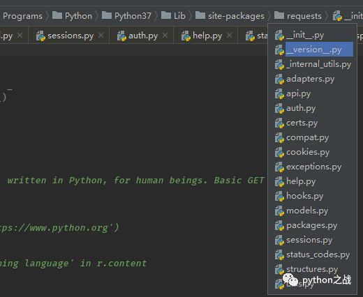

requests库是python爬虫使用频率最高的库，在网络请求中发挥着重要的作用，这边文章浅析requests的ＡＰＩ源码。
该库文件结构如图：

提供的核心接口在__init__文件中，如下：
from . import utils
from . import packages
from .models import Request, Response, PreparedRequest
from .api import request, get, head, post, patch, put, delete, options
from .sessions import session, Session
from .status_codes import codes
from .exceptions import (
RequestException, Timeout, URLRequired,
TooManyRedirects, HTTPError, ConnectionError,
FileModeWarning, ConnectTimeout, ReadTimeout
)ｒｅｑｕｅｓｔｓ常用方法在api.py文件中，源码如下：
# -*- coding: utf-8 -*-
"""
requests.api
~~~~~~~~~~~~
This module implements the Requests API.
:copyright: (c) 2012 by Kenneth Reitz.
:license: Apache2, see LICENSE for more details.
"""
from . import sessions
def request(method, url, **kwargs):
"""Constructs and sends a :class:`Request <Request>`.
:param method: method for the new :class:`Request` object.
:param url: URL for the new :class:`Request` object.
:param params: (optional) Dictionary, list of tuples or bytes to send
in the body of the :class:`Request`.
:param data: (optional) Dictionary, list of tuples, bytes, or file-like
object to send in the body of the :class:`Request`.
:param json: (optional) A JSON serializable Python object to send in the body of the :class:`Request`.
:param headers: (optional) Dictionary of HTTP Headers to send with the :class:`Request`.
:param cookies: (optional) Dict or CookieJar object to send with the :class:`Request`.
:param files: (optional) Dictionary of ``'name': file-like-objects`` (or ``{'name': file-tuple}``) for multipart encoding upload.
``file-tuple`` can be a 2-tuple ``('filename', fileobj)``, 3-tuple ``('filename', fileobj, 'content_type')``
or a 4-tuple ``('filename', fileobj, 'content_type', custom_headers)``, where ``'content-type'`` is a string
defining the content type of the given file and ``custom_headers`` a dict-like object containing additional headers
to add for the file.
:param auth: (optional) Auth tuple to enable Basic/Digest/Custom HTTP Auth.
:param timeout: (optional) How many seconds to wait for the server to send data
before giving up, as a float, or a :ref:`(connect timeout, read
timeout) <timeouts>` tuple.
:type timeout: float or tuple
:param allow_redirects: (optional) Boolean. Enable/disable GET/OPTIONS/POST/PUT/PATCH/DELETE/HEAD redirection. Defaults to ``True``.
:type allow_redirects: bool
:param proxies: (optional) Dictionary mapping protocol to the URL of the proxy.
:param verify: (optional) Either a boolean, in which case it controls whether we verify
the server's TLS certificate, or a string, in which case it must be a path
to a CA bundle to use. Defaults to ``True``.
:param stream: (optional) if ``False``, the response content will be immediately downloaded.
:param cert: (optional) if String, path to ssl client cert file (.pem). If Tuple, ('cert', 'key') pair.
:return: :class:`Response <Response>` object
:rtype: requests.Response
Usage::
>>> import requests
>>> req = requests.request('GET', 'https://httpbin.org/get')
<Response [200]>
"""
# By using the 'with' statement we are sure the session is closed, thus we
# avoid leaving sockets open which can trigger a ResourceWarning in some
# cases, and look like a memory leak in others.
with sessions.Session() as session:
return session.request(method=method, url=url, **kwargs)
def get(url, params=None, **kwargs):
r"""Sends a GET request.
:param url: URL for the new :class:`Request` object.
:param params: (optional) Dictionary, list of tuples or bytes to send
in the body of the :class:`Request`.
:param \*\*kwargs: Optional arguments that ``request`` takes.
:return: :class:`Response <Response>` object
:rtype: requests.Response
"""
kwargs.setdefault('allow_redirects', True)
return request('get', url, params=params, **kwargs)
def options(url, **kwargs):
r"""Sends an OPTIONS request.
:param url: URL for the new :class:`Request` object.
:param \*\*kwargs: Optional arguments that ``request`` takes.
:return: :class:`Response <Response>` object
:rtype: requests.Response
"""
kwargs.setdefault('allow_redirects', True)
return request('options', url, **kwargs)
def head(url, **kwargs):
r"""Sends a HEAD request.
:param url: URL for the new :class:`Request` object.
:param \*\*kwargs: Optional arguments that ``request`` takes.
:return: :class:`Response <Response>` object
:rtype: requests.Response
"""
kwargs.setdefault('allow_redirects', False)
return request('head', url, **kwargs)
def post(url, data=None, json=None, **kwargs):
r"""Sends a POST request.
:param url: URL for the new :class:`Request` object.
:param data: (optional) Dictionary, list of tuples, bytes, or file-like
object to send in the body of the :class:`Request`.
:param json: (optional) json data to send in the body of the :class:`Request`.
:param \*\*kwargs: Optional arguments that ``request`` takes.
:return: :class:`Response <Response>` object
:rtype: requests.Response
"""
return request('post', url, data=data, json=json, **kwargs)
def put(url, data=None, **kwargs):
r"""Sends a PUT request.
:param url: URL for the new :class:`Request` object.
:param data: (optional) Dictionary, list of tuples, bytes, or file-like
object to send in the body of the :class:`Request`.
:param json: (optional) json data to send in the body of the :class:`Request`.
:param \*\*kwargs: Optional arguments that ``request`` takes.
:return: :class:`Response <Response>` object
:rtype: requests.Response
"""
return request('put', url, data=data, **kwargs)
def patch(url, data=None, **kwargs):
r"""Sends a PATCH request.
:param url: URL for the new :class:`Request` object.
:param data: (optional) Dictionary, list of tuples, bytes, or file-like
object to send in the body of the :class:`Request`.
:param json: (optional) json data to send in the body of the :class:`Request`.
:param \*\*kwargs: Optional arguments that ``request`` takes.
:return: :class:`Response <Response>` object
:rtype: requests.Response
"""
return request('patch', url, data=data, **kwargs)
def delete(url, **kwargs):
r"""Sends a DELETE request.
:param url: URL for the new :class:`Request` object.
:param \*\*kwargs: Optional arguments that ``request`` takes.
:return: :class:`Response <Response>` object
:rtype: requests.Response
"""
return request('delete', url, **kwargs)常用的get、post、put、optins、delete方法都在该文件中实现，这些方法都是使用内部封装的一个模块：request，而request是对session.request内部模块的封装，提供一个上下文管理。
继续看最为核心的session.request模块源码:
def request(self, method, url,
·······
# Create the Request.
req = Request(
method=method.upper(),
url=url,
headers=headers,
files=files,
data=data or {},
json=json,
params=params or {},
auth=auth,
cookies=cookies,
hooks=hooks,
)
prep = self.prepare_request(req)
proxies = proxies or {}
settings = self.merge_environment_settings(
prep.url, proxies, stream, verify, cert
)
# Send the request.
send_kwargs = {
'timeout': timeout,
'allow_redirects': allow_redirects,
}
send_kwargs.update(settings)
resp = self.send(prep, **send_kwargs)
return resp在这里提交过来的请求信息将组装成Request请求对象，并对其中的配置参数进行合并，然后将Request请求和配置参数发送给self.send，来请求下载，继续看self.send
def send(self, request, **kwargs):
"""Send a given PreparedRequest.
:rtype: requests.Response
"""
# Set defaults that the hooks can utilize to ensure they always have
# the correct parameters to reproduce the previous request.
kwargs.setdefault('stream', self.stream)
kwargs.setdefault('verify', self.verify)
kwargs.setdefault('cert', self.cert)
kwargs.setdefault('proxies', self.proxies)
# It's possible that users might accidentally send a Request object.
# Guard against that specific failure case.
if isinstance(request, Request):
raise ValueError('You can only send PreparedRequests.')
# Set up variables needed for resolve_redirects and dispatching of hooks
allow_redirects = kwargs.pop('allow_redirects', True)
stream = kwargs.get('stream')
hooks = request.hooks
# Get the appropriate adapter to use
adapter = self.get_adapter(url=request.url)
# Start time (approximately) of the request
start = preferred_clock()
# Send the request
r = adapter.send(request, **kwargs)
# Total elapsed time of the request (approximately)
elapsed = preferred_clock() - start
r.elapsed = timedelta(seconds=elapsed)
# Response manipulation hooks
r = dispatch_hook('response', hooks, r, **kwargs)
# Persist cookies
if r.history:
# If the hooks create history then we want those cookies too
for resp in r.history:
extract_cookies_to_jar(self.cookies, resp.request, resp.raw)
extract_cookies_to_jar(self.cookies, request, r.raw)
# Redirect resolving generator.
gen = self.resolve_redirects(r, request, **kwargs)
# Resolve redirects if allowed.
history = [resp for resp in gen] if allow_redirects else []
# Shuffle things around if there's history.
if history:
# Insert the first (original) request at the start
history.insert(0, r)
# Get the last request made
r = history.pop()
r.history = history
# If redirects aren't being followed, store the response on the Request for Response.next().
if not allow_redirects:
try:
r._next = next(self.resolve_redirects(r, request, yield_requests=True, **kwargs))
except StopIteration:
pass
if not stream:
r.content
return r当然在self.send中核心的是下面几行行代码：
# Start time (approximately) of the request
start = preferred_clock()
# Send the request
r = adapter.send(request, **kwargs)
# Total elapsed time of the request (approximately)
elapsed = preferred_clock() - start
r.elapsed = timedelta(seconds=elapsed)
# Response manipulation hooks
r = dispatch_hook('response', hooks, r, **kwargs)如果还有问题未能得到解决，搜索887934385交流群，进入后下载资料工具安装包等。最后，感谢观看！
分别进行请求，并将请求响应内容构造成响应对象r,其中又引入本地模块adapter，该模块主要负责请求处理及其响应内容。
requests库实现很巧妙，对cookie保持、代理问题、SSL验证问题都做了处理，功能很全，其中细节不仔细去研读很难理解，这里只是对其实现过程做一个浅析，如果有感兴趣的同学，可以仔细研读每个模块和功能，其中有奥妙。